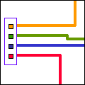

:
tracker:
:
tracker:

Tracker. version beta 0.5
|
||||||
Description
Tracker is a small sequencing tool where the user draws the pitch and the length of each sound. It has four tracks, each with its own colour. When playing, small boxes in respective colour appear where the sound is playing next.
 Quick
Time sounds can be imported into the Tracker and used for creating strange
and/or amusing sound patterns. It is also possible to save each pattern
on the hard disk and load up again if one is happy with it. Thus the same
pattern can be used to trigger different set of sounds, giving you a chance
to explore different relationships of the sounds that you«re working
with.
Quick
Time sounds can be imported into the Tracker and used for creating strange
and/or amusing sound patterns. It is also possible to save each pattern
on the hard disk and load up again if one is happy with it. Thus the same
pattern can be used to trigger different set of sounds, giving you a chance
to explore different relationships of the sounds that you«re working
with.
Custom sounds can be imported in QuickTime format.
A free QT converter can be downloaded from http://www.downrecs.com/software.html.
Under Windows this program requires QuickTime to run.